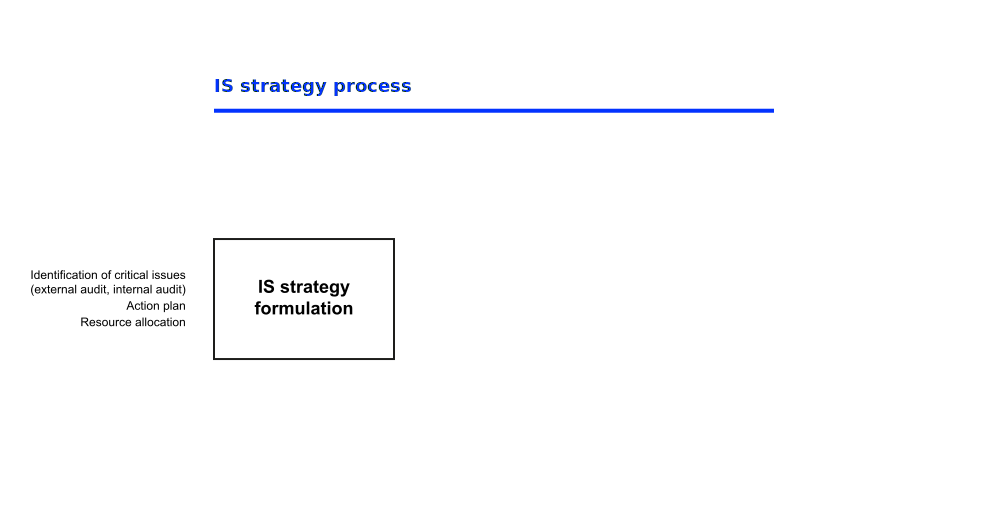
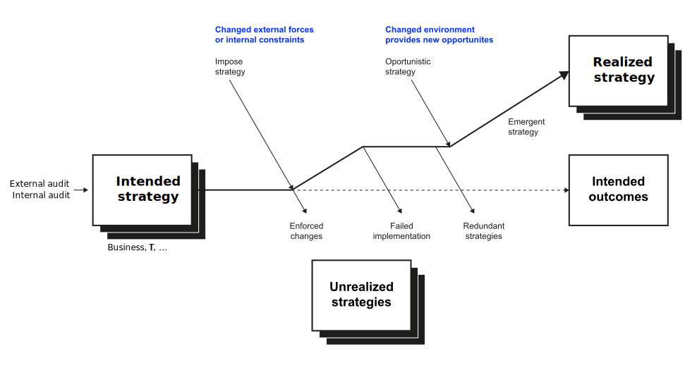

Main contents
Peppard & Ward (2016) suggest the following structure and contents for an IS strategy:
- Purpose of IS strategy
- Summary of business strategy
- Fields of action
- Application portfolio
- Issues arising from strategy
Strategy and Performance Management
Neu-Ulm University of Applied Sciences
January 12, 2026
After this session, you should have a solid understanding of
To be truly strategic, CIOs need to think about how value is created. Many are good at cost-cutting, but this is almost by definition a backward looking exercise—optimizing something that is already in place. This is not strategic. CIOs need to think about what future possibilities there are to leverage technology for new value and top-line growth. This is what differentiates the strategic CIO. Peter High, Author of “Implementing World Class IT Strategy”
What is an IS/IT strategy?
Ideally, you should be able to answer based on your reading of Chen et al. (2010).
Chen et al. (2010) identified three conceptions of information systems (IS) strategy in IS literature:
Conceptions 1 and 2 either subordinate IS strategy to business strategy or reduce it to functional planning. Only the third conception positions IS strategy as a distinct organizational-level construct.
IS strategy refers to the organizational perspective on the investment in, deployment, use, and management of IS. (Chen et al., 2010, p. 237).
The intended impact of IS/IT strategy1 is to provide a shared understanding across the organization to guide subsequent IS/IT investment and deployment decisions.


Scenario: You are the IT steering committee of MediPharm AG, a mid-sized German pharmaceutical distributor supplying hospitals and pharmacies. The company operates 5 regional warehouses and employs 800 people. Recent challenges include new competitors offering same-day delivery, increasing regulatory requirements for drug traceability, and pressure from customers to digitize ordering processes.
Template/guideline:
| Business-IT Assessment | Immediate Investments | Future Investments |
|---|---|---|
| Industry context: What are competitors doing? What role does IT play in the industry? | Business strategy & CSFs: What is MediPharm’s competitive position? What must go right? | Digital impact: How could emerging technology (AI, IoT, platforms) change the market? |
| Value chain analysis: Where does information flow? Where are the gaps? | Current capabilities: What are IT strengths and weaknesses today? | Value proposition change: How could IS transform what MediPharm offers? |
| Existing applications: What systems exist? How well do they support the business? | Short-term priorities: Which IT investments are urgent (next 12 months)? | Long-term priorities: Which IT investments are strategic bets (2–5 years)? |
25:00
Earl (1993) identifies five distinct approaches to IS strategy formulation and IS planning within organizations.
Identify a real-life example per approach.
10:00

Peppard & Ward (2016) suggest the following structure and contents for an IS strategy:
Peppard & Ward (2016) points out following further topics that need to be addressed by strategic IS/IT management:
Organization and resource structures, approval and prioritization practices, vendor or supplier policies, HR policies, and IT accounting policies.
Developing an IS strategy is a major undertaking, and despite a plethora of so-called ‘methods’, planning tools and brigades of consultants, it is still more of an art than a science (Peppard & Ward, 2016). However, there are a number of factors that can be considered critical to success:
People, executive buy-in, holistic view and in-depth understanding, consistent objectives, and ability to implement.
The following questions are designed to review and consolidate what you have learned and are a good starting point for preparing for the exam.
General questions:
Questions with regards to Henderson & Venkatraman (1993) and their concept of business-IT alignment:
IS strategy is the broader organizational perspective on information systems, while IT strategy typically refers more narrowly to the technology infrastructure and IT function planning. In practice, these terms are often conflated, and we use them interchangeably to refer to the broader perspective.